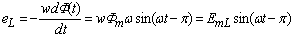
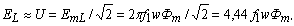

6.4.1.3. Уравнение трансформаторной ЭДС
Так как ЭДС самоиндукции , то её амплитуда EmL = 2pf1wФm, а действующее значение
 |
(6.18) |
|---|
Соотношение (6.18) носит название уравнение трансформаторной ЭДС. Оно широко используется при расчёте электротехнических устройств: трансформаторов, асинхронных машин и др.